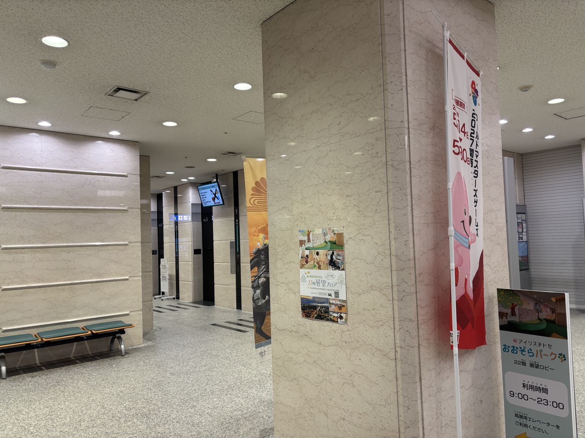
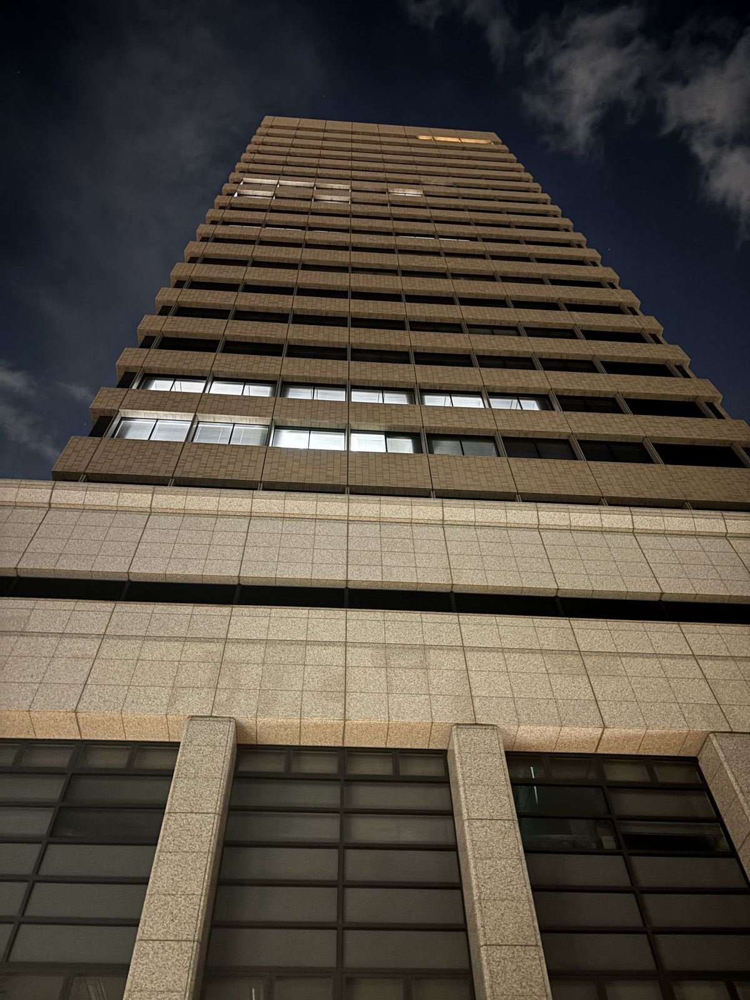
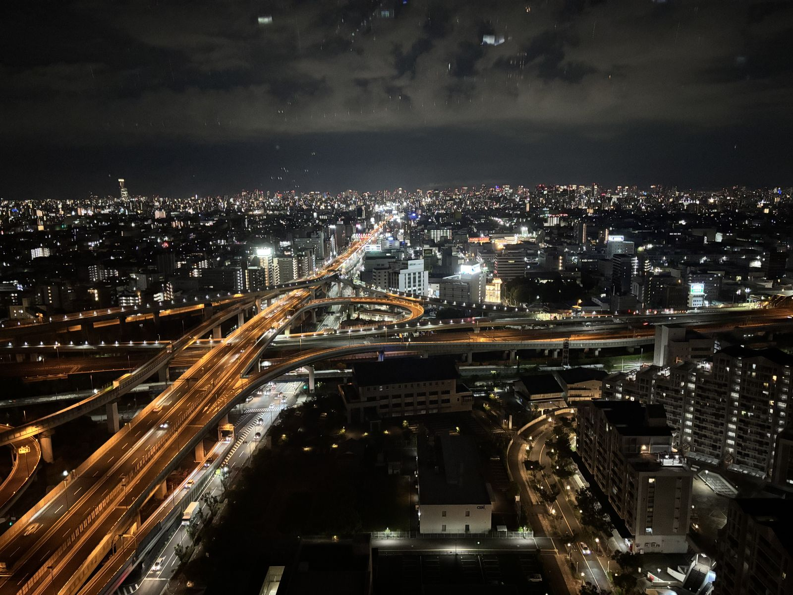
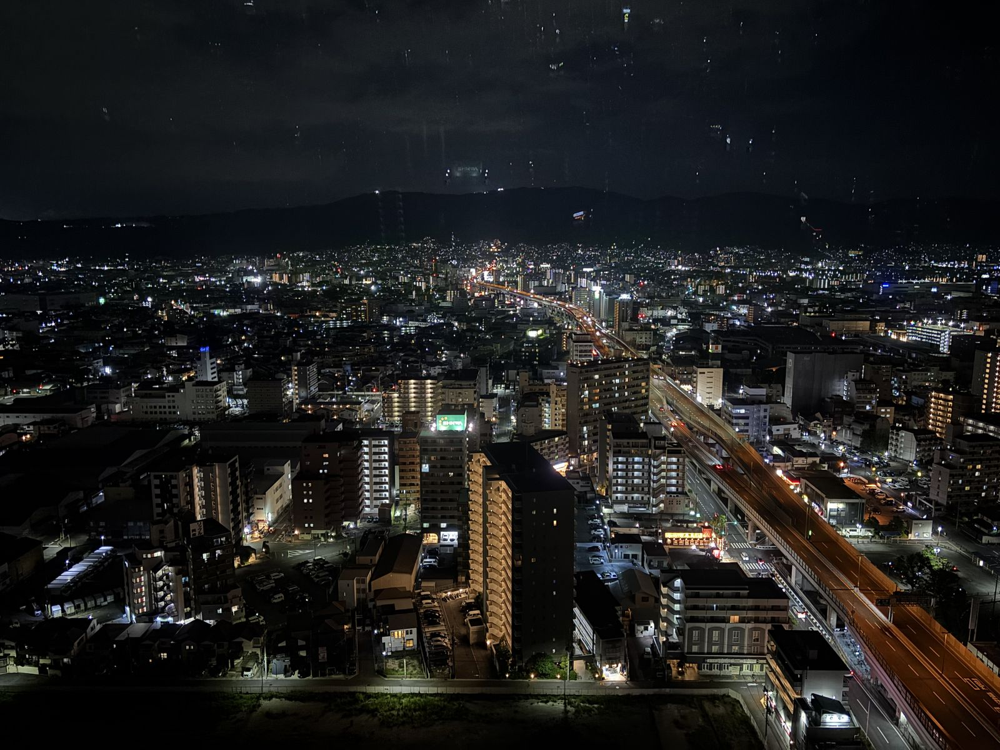

東大阪市役所22階展望ロビー · Tonight's opening view
Free to enter, open until 23:00, and certified as one of Japan's Night View Heritage sites — this 22nd-floor lobby is where tonight's ascent begins. From here: Abeno Harukas, Mt. Ikoma ahead of you, the Higashiosaka junction below, and on a clear night, Awaji Island on the horizon.



